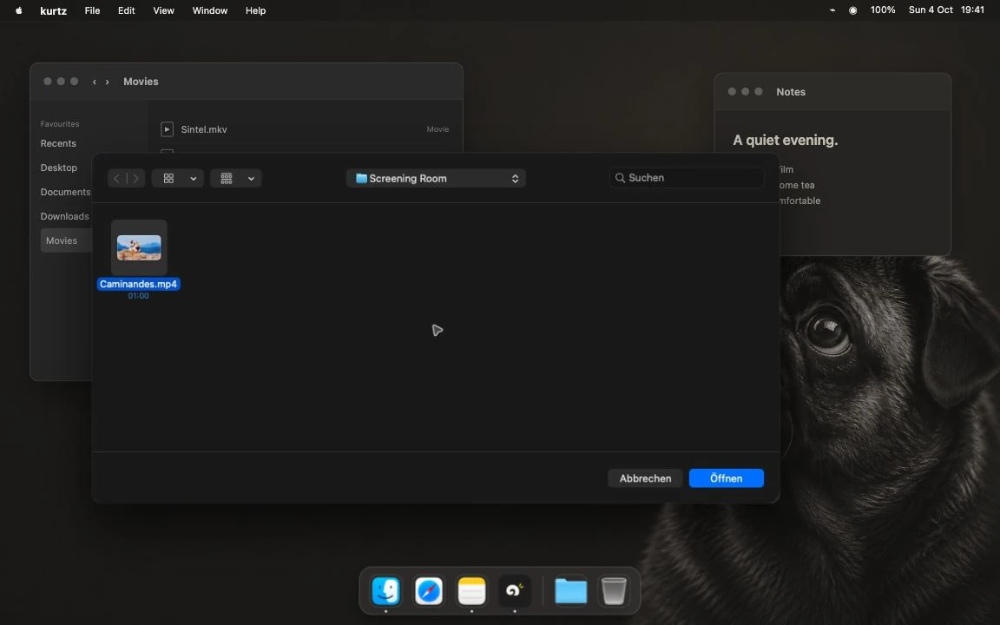
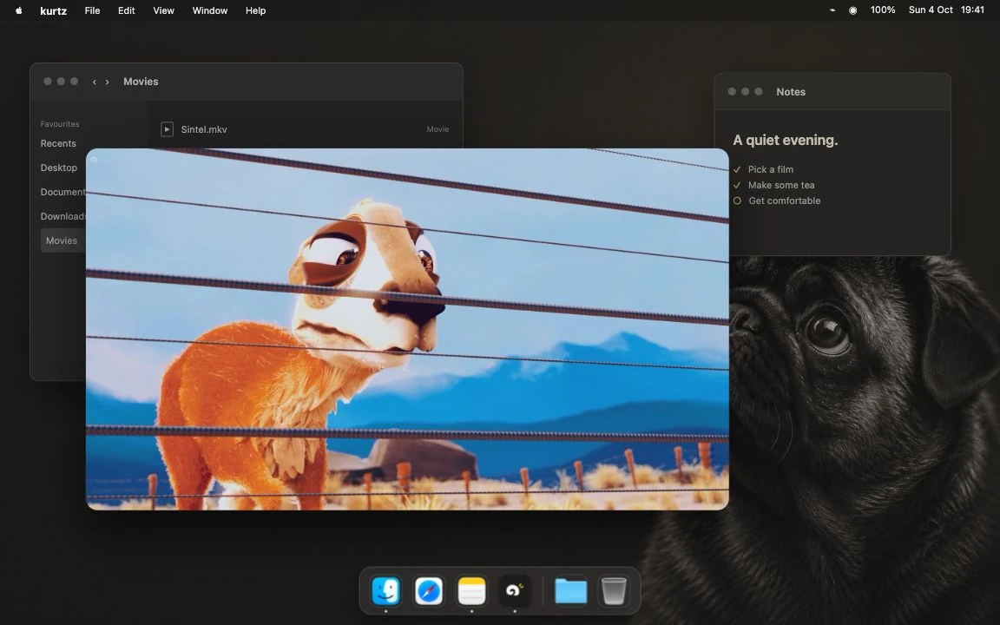
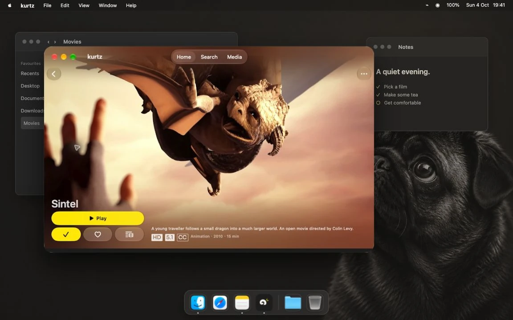
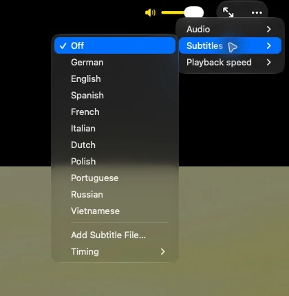

Open your file.
Press ⌘O, choose a video and watch. Your own clips, a saved film, an MKV in Downloads. No account or Jellyfin server needed.


 Get kurtz
Get kurtz
kurtz video player. Free, for your files and your Jellyfin library.
0.9.7 beta · macOS 15.6+
iPhone, iPad & Apple TV status

Choose a track. Find your scene. Let the controls step back.
Same frame. Same desktop. View full size
Controls hidden above. See the same frame with controls visible.
A video on your Mac or a film on your server. Start where it lives. Both open in the same player, with the same familiar controls.
Press ⌘O, choose a video and watch. Your own clips, a saved film, an MKV in Downloads. No account or Jellyfin server needed.

Connect your Jellyfin server, browse your titles and press play. Your server’s library and watch progress, in an app that also opens local files.

Jellyfin needs an existing server and access to it. Local playback keeps its own history on your Mac; it does not sync a local file with a server copy.
The everyday things, close at hand.

Free & open source

No subscription. No in-app purchases. No Pro unlock. The current app is free to use, from the first local video to your Jellyfin library.
No trial to keep track of. No feature tier to choose.
Explore the sourceSwiftfin and its contributors built the native Apple Jellyfin client foundation that makes kurtz possible. kurtz is a fork of that work, adding local-file playback on Mac alongside the library experience.
kurtz is independent. It is not an official or endorsed Jellyfin or Swiftfin application.
Start with the Mac beta. Download the disk image, then drag kurtz into Applications.
Available now · public beta
Local files and Jellyfin.
macOS 15.6+ · Apple silicon & Intel
Version 0.9.7 · build 9 · Universal DMG
Developer ID signed & notarized by Apple
In development
Local videos from Files and Jellyfin.
Target: iOS / iPadOS 18.6 or later.
App Store release in preparation. No public download or TestFlight invite.
Release in preparation
Jellyfin browsing and playback.
Target: tvOS 26.1 or later. No local-file workflow.
Source builds available. No public App Store or TestFlight release.
Mobile and TV still need physical-device qualification and Apple review. Windows and Linux are not supported. Apple release plan
Mac runtime checks were on Apple silicon. Intel, the oldest supported operating systems and long-session reliability still need qualification. Simulator builds do not establish device playback or Store approval.
VLC is the default local engine; mpv is the alternative. Format, HDR and audio behavior depend on the engine and file. The floating mini player is a kurtz window, separate from system Picture-in-Picture.
Verified product status · Build from source · Download checksum · Release sources & licenses
Your digital life. Actually yours. kurtz brings your films, photos and documents into one calm app that runs on your own hardware. It is in development. The video player stays free and complete on its own, with or without it.